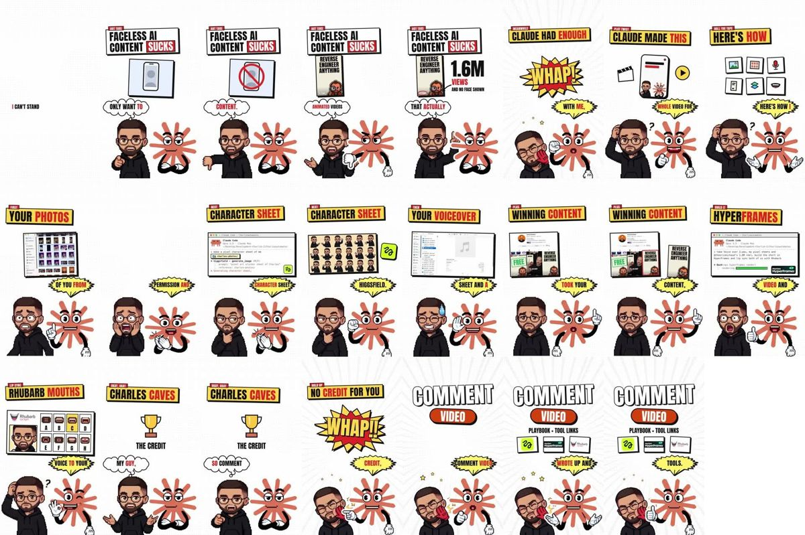
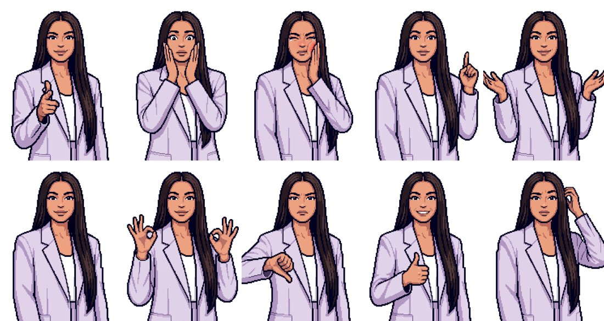
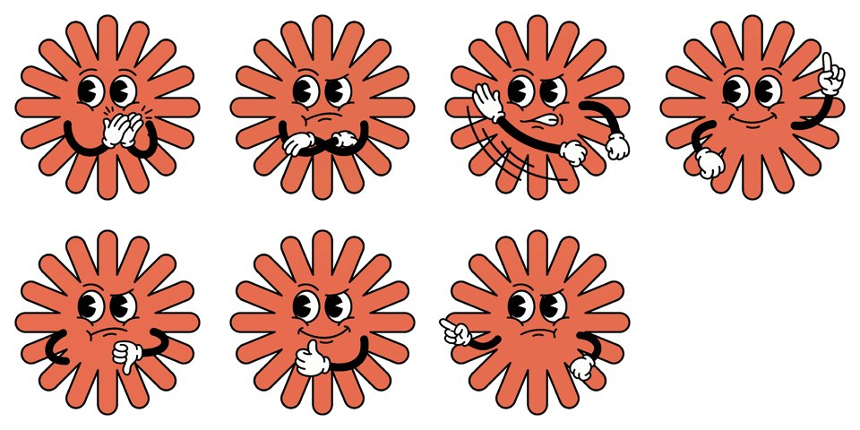

Claude te cachetea
Un sketch de cómic: tú dices que la IA no sirve y la mascota de Claude te demuestra lo contrario… a cachetadas
Dos personajes discuten en formato cómic: tu muñequito pixel y una mascota de Claude con guantes. Tú te burlas del contenido hecho con IA, Claude te da una cachetada (¡ZAS!) y explica cómo hizo el video. Tiene títulos en cajas amarillas, globos de diálogo con la palabra clave en rojo, rayos de fondo y sacudida de pantalla en cada golpe.
Herramientas
Claude Code
Escribe el sketch, arma las escenas, sincroniza las bocas y renderiza.
Instalar Claude Code →Higgsfield
Tu muñequito, la mascota (Nano Banana Pro), tu voz clonada (Seed Audio) y la voz de la mascota (ElevenLabs v4).
Abrir Higgsfield →Repos para descargar
heygen-com/hyperframes
HTML → video, hecho para agentes. Es el que menciona el sketch.
claude plugin marketplace add heygen-com/hyperframes claude plugin install hyperframes@hyperframes
DanielSWolf/rhubarb-lip-sync
Lee el audio y dice qué forma de boca va en cada momento.
remotion-dev/remotion
El motor con el que armamos este video.
npx create-video@latest
SYSTRAN/faster-whisper
Transcribe las voces con el tiempo de cada palabra para los globos.
pip install faster-whisper
01Cuéntale tu idea a Claude
Explícale el sketch: quién eres tú, qué opinión "equivocada" vas a defender y cómo te va a corregir la mascota. Pídele que te haga preguntas antes de escribir.
Quiero un reel de ~45 s estilo cómic con dos personajes: mi muñequito pixel y la mascota de Claude (un asterisco naranja con ojos y guantes). La idea: yo digo [OPINIÓN QUE VAS A DEFENDER] y Claude se harta, me da una cachetada y explica [CÓMO SE HIZO / EL TEMA]. Para quién es: [TU AUDIENCIA] Cierre: comenta [PALABRA] para [LO QUE REGALAS]. Estilo: fondo blanco con rayos, títulos en cajas amarillas con una palabra en rojo, globos de diálogo (nube para mí, explosión amarilla para Claude), "¡ZAS!" con sacudida en cada golpe. Antes de escribir, hazme las preguntas que necesites y luego propónme las escenas con quién habla, qué pose hace cada uno y qué tarjeta sale.
02Escribe el diálogo para dos voces
El guion se separa por personaje. Cada bloque se genera aparte con su voz y después se pegan en orden.

Escribe el diálogo en español con mi forma de hablar ([TU PAÍS / EXPRESIONES]). Sepáralo en bloques así: YO: ... CLAUDE: ... Claude habla gritando, rápido y con humor. Yo sueno sarcástica al principio y me rindo al final. Duración total: ~45 s.
03Crea tu muñequito y sus poses
Primero el personaje base desde tu foto de perfil. Luego las poses usando ese personaje como referencia. Para este sketch hacen falta poses de reacción: cachete rojo, susto, rascarse la cabeza…

Pixel art avatar of the same person as the reference pixel character (same face, same hair, same clothes, same 16-bit pixel art style, visible square pixels, thick dark outlines, flat 2-3 tone shading). Upper body from top of head down to the hips, centered, with wide white margins on both sides so the arms and hands fully fit in frame. Mouth closed. Pose: [POSE]. Plain pure white background, no text, no shadow.
standing relaxed, arms down, confident smile. pointing the index finger straight at the viewer, sassy confident look. giving a thumbs down with one hand, unimpressed annoyed face. shrugging with both palms open facing up, sarcastic smirk. just got slapped: one hand holding a red cheek, eyes squeezed shut in pain, head tilted, comic. scratching the head with one hand, confused face, one eyebrow raised. raising one index finger up next to the head, explaining, eyebrows raised. both hands on the cheeks, shocked surprised face, eyes wide. making an OK hand sign at chest height, satisfied face. giving a big thumbs up at chest height, big smile.
04Crea la mascota de Claude
Primero se genera la mascota base y después sus poses, con la base como referencia. La pose de cachetada lleva líneas de movimiento.

Cute cartoon mascot character: a coral orange (#D97757) asterisk / starburst shape with about twelve thick rounded rays as its body, a big expressive cartoon face in the center with two large round white eyes with black pupils and thick black eyebrows, mouth closed, two thin black rubber-hose arms with white cartoon gloves, no legs. Arms crossed, annoyed skeptical look. Bold flat colors, thick black outlines, retro 1930s rubber hose cartoon style, full character centered with white margin. Plain pure white background, no text, no shadow.
The exact same cartoon mascot character as the reference (same coral starburst body, same face, eyes, eyebrows, black rubber-hose arms, white gloves, same style and size, centered). Mouth closed. Pose: [POSE]. Plain pure white background, no text, no shadow. Poses: thumbs down skeptical · furious, swinging one gloved hand hard toward the left in a big slapping motion with cartoon motion lines · one index finger up explaining proudly · clapping happily · pointing toward the left with an angry accusing look · big thumbs up proud grin.
05Versión con la boca abierta de cada pose
Cada pose (tuya y de la mascota) necesita su gemela con la boca abierta. Claude pega solo la zona de la boca sobre la original para que no haya saltos.
Edit this exact pixel art image. Change ONLY the mouth: make it open mid-speech, like saying "ah", showing a dark mouth interior and a row of upper teeth, same pixel art style. Keep every other pixel identical: same pose, framing, face, hair, clothes, hands, white background.
Edit this exact cartoon image. Change ONLY the mouth: make it wide open shouting/talking, showing a dark mouth interior with a red tongue, same cartoon style and outline. Keep every other pixel identical: same pose, body, eyes, eyebrows, arms, gloves, framing, white background.
06Las dos voces
Tu parte, con tu voz clonada en Seed Audio. La de la mascota, con una voz de ElevenLabs v4 y la etiqueta [shouting]; después Claude le sube un poco el tono para que suene a caricatura. Se pegan en orden y se apunta cuándo habla cada uno.
Tengo los audios por bloque: yo_1.wav, claude_1.mp3, yo_2.wav, claude_2.mp3. 1. Quita los silencios del principio y del final de cada uno. 2. A los de Claude súbeles el tono ~2.5 semitonos sin cambiar la velocidad (asetrate + atempo). 3. Pégalos en orden con pausas cortas (0.1–0.35 s) en voz.wav. 4. Guarda en segs.json quién habla en cada tramo (inicio y fin).
07Pídele a Claude que arme el cómic
El prompt grande. Cada personaje mueve la boca solo cuando le toca hablar, y los globos salen encima de quien habla.
Arma en Remotion (1080x1920, 30 fps) el sketch de cómic. Material: public/voz.wav, segs.json, sprites en public/yo/[pose]_c|_o.png y public/claude/[pose]_c|_o.png. Estilo: - Fondo blanco con rayos grises suaves que giran (más fuertes cuando habla Claude) - Arriba: etiqueta roja pequeña (OPINIÓN, GIRO, PRIMERO…) y título en caja con borde negro grueso y sombra dura, en Anton; caja blanca con la palabra clave en caja roja cuando hablo yo, y caja amarilla con la palabra en rojo cuando habla Claude - En medio, una tarjeta por escena con el mismo borde de cómic: celular tachado, póster con vistas, galería de fotos, terminal de Claude Code, hoja de personaje, nota de voz, perfil de la competencia, Rhubarb con bocas A–H, trofeo - Abajo: yo a la izquierda y Claude a la derecha - En cada cachetada: un "¡ZAS!" amarillo y rojo que rebota, la pantalla tiembla y suena un impacto Sincronía: 1. Transcribe voz.wav con faster-whisper (palabras con tiempos) y asigna cada palabra a quien habla según segs.json. 2. Boca: el volumen por fotograma solo abre la boca de quien habla en ese tramo. 3. Globos de 1 a 3 palabras en mayúsculas, con las palabras clave en rojo: nube blanca para mí y explosión amarilla para Claude. 4. Engancha cada escena a la palabra donde empieza la idea. Renderiza primero fotos sueltas para revisar y luego el video; normaliza a -14 LUFS.
08Revisa y publica
Lo típico de corregir: globos sin espacios entre palabras (pasa si el texto queda dentro de un contenedor flex), una tarjeta que tapa a un personaje o una pose que no va con la frase.
Hazme una hoja con un fotograma de cada escena. Corrige: [lo que no te gustó]. Que los globos no tapen caras, que las palabras tengan espacios y que el ¡ZAS! coincida justo con la cachetada. Vuelve a renderizar y normaliza a -14 LUFS.